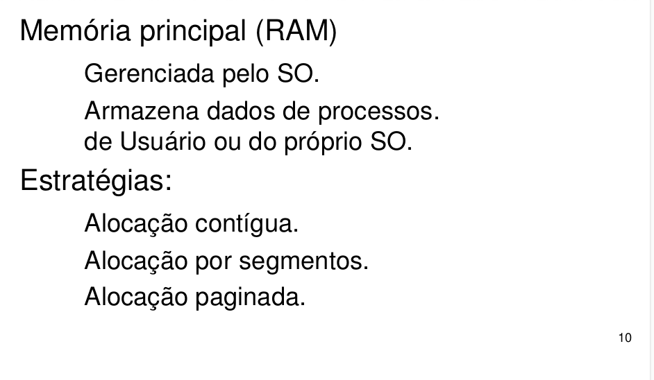
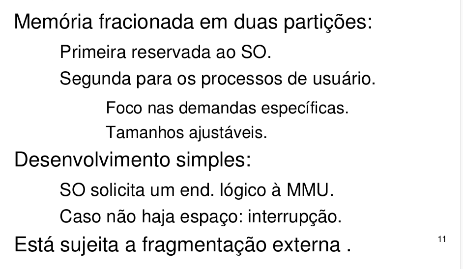
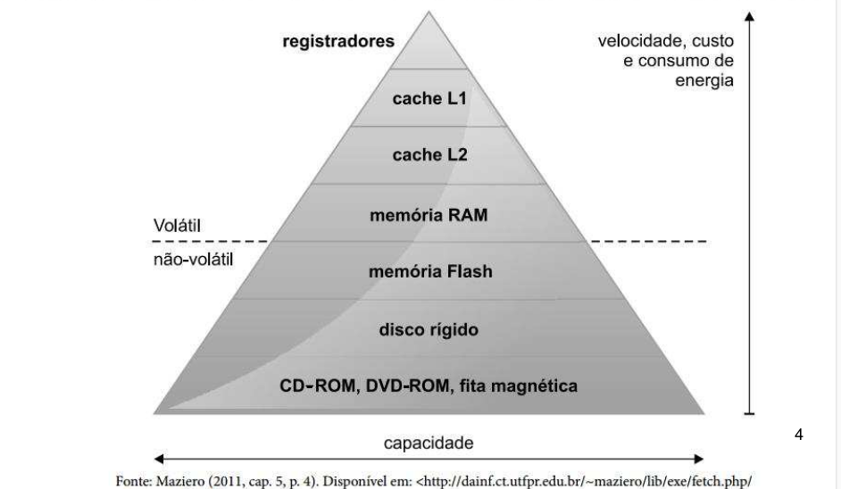
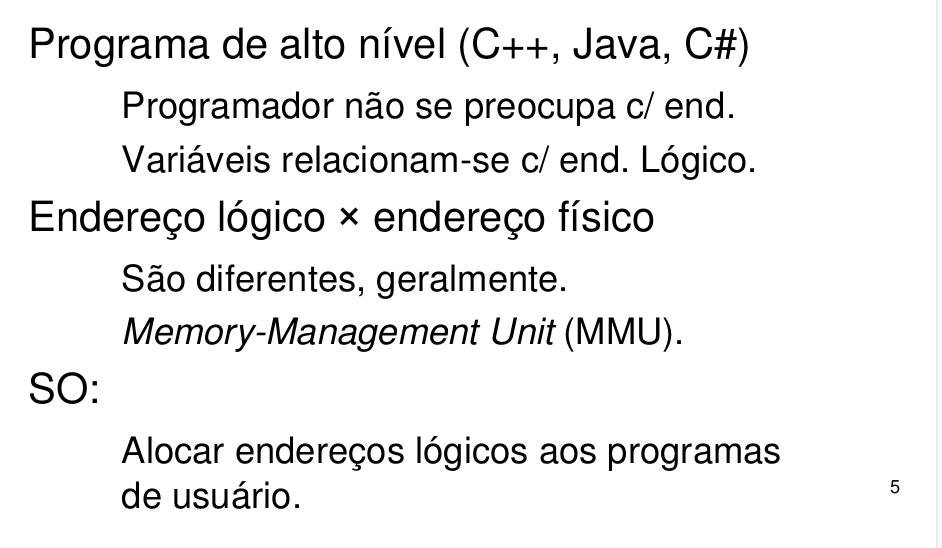
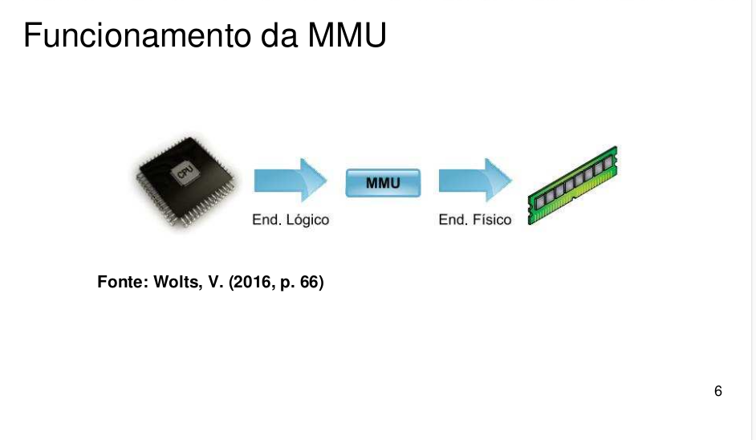
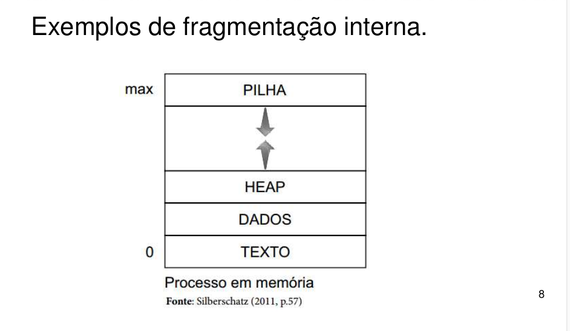
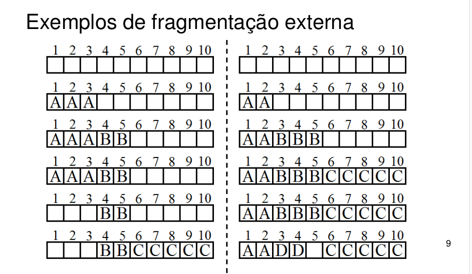

Objetivos de Aprendizagem
- Apresentar definições de memória e as técnicas que o sistema operacional utiliza para garantir o armazenamento dos dados utilizados pelos processos.
- Diferenciar endereços lógicos dos endereços físicos, quem os cria e como são utilizados pela memória.
- Explicar como as informações são armazenadas/alocadas na memória e como elas podem se fragmentar.
- Identificar quais estratégias de alocação são utilizadas pelos principais sistemas operacionais.
- Apresentar o uso da técnica de memória virtual.
- Apresentar conceitos de arquivos.
- Apresentar e diferenciar os sistemas de arquivos utilizados pelos principais sistemas operacionais.
INTRODUÇÃO
Estratégias de alocação
A memória principal (RAM) utiliza estratégias para armazenar tanto os dados do sistema operacional como os diversos processos na memória. Neste tópico iremos aprender três das principais estratégias: alocação contígua, alocação por segmentos e alocação paginada.

Alocação contígua
Nesta estratégia, a memória é dividida em duas partições, sendo uma para o sistema operacional e a outra partição de tamanhos ajustáveis que irão se adequar à demanda específica de cada processo do usuário. A MMU recebe o endereço lógico e tenta salvar em uma partição. Caso o espaço solicitado seja compatível, a informação é salva, senão é retornada uma interrupção para o processador, indicando um endereço inválido.
A vantagem desta alocação é que ela é simples para ser desenvolvida, mas está sujeita a fragmentação externa.

Na figura abaixo, temos a definição da hierarquia de memória em um computador:
Algumas classificações precisam ser destacadas:
- Memória principal: são mais rápidas, menores (capacidade de armazenamento), mais caras, consomem mais energia e são voláteis. Os registradores, cache L1 e L2 e a memória RAM estão nesta categoria.
- Memória secundária ou de massa: não voláteis, lentas e baratas se comparadas às memórias principais. Disco rígido, CD-ROM são alguns exemplos desta categoria.
Endereço lógico e físico
Quando um programa está em execução, uma série de endereços de memórias são criados pelo processador e são classificados como ENDEREÇOS LÓGICOS, por conter a lógica do programa. Quando estes endereços estão fisicamente armazenados na memória RAM, chamamos estes de ENDEREÇOS FÍSICOS. Na grande maioria das vezes, um endereço lógico não vai ser igual ao endereço físico da memória RAM. Os Programas dos usuários, não enxergam os endereços físicos, trabalham somente com os endereços lógicos.
O processo de transformação do endereço lógico em físico é realizado pelo hardware que pode estar ou não junto ao processador. Damos o nome deste hardware de MMU (memory-management unit). A MMU sabe exatamente onde determinado endereço lógico foi armazenado fisicamente na memória
RAM. Para este armazenamento, existem diversos métodos que a MMU pode utilizar, estes serão descritos no item estratégias de alocação.


Fragmentação de memória
Conforme visto anteriormente, a memória armazena, temporariamente, um conjunto de dados utilizados pelos processos. Estes dados são adicionados e retirados da memória RAM pela MMU, mediante as solicitações do processador (CPU).
Imagine que uma memória pode guardar 10 posições de dados. Para você entender melhor, desenhe uma linha e crie 10 posições, algo semelhante a uma régua. Um processo (A) solicita o uso de 3 posições. A MMU irá alocar os 3 primeiros espaços (posição 1, 2 e 3 ocupadas). Logo em seguida, um segundo processo (B) solicita o uso de 2 posições de memória. A MMU prontamente disponibiliza o espaço solicitado (posição 4 e 5, pois a posição 1, 2 e 3 estão ocupadas). Neste momento, a memória possui 5 espaços livres e 5 espaços ocupados por dois processos (A e B).
Imagine que um usuário fechou o processo A, com isto o espaço 1, 2 e 3 deve ser liberado. A MMU irá fazer este trabalho. Agora temos somente as posições 4 e 5 ocupadas, pois a MMU retirou os dados do processo A, mas ela não desloca a informação do bloco 4 e 5 para as posições 1 e 2.
Imagine que um usuário solicitou a abertura de um processo diferente de A e diferente de B e que este necessita de 5 posições na memória. A MMU irá alocar nas posições 6, 7, 8, 9 e 10, pois as posições 4 e 5 estão ocupadas e nas posições 1, 2 e 3 não comporta o tamanho solicitado.
Nesta pequena simulação entre 3 processos, percebemos que as três primeiras posições da memória ficaram vazias, gerando um “buraco”. Esta situação pode piorar ainda com o passar do tempo e das inserções e retiradas de processos da memória.
A estes “buracos” ou vazios na memória damos o nome de fragmentação. A fragmentação pode ser dividida em:
- Fragmentação externa: ocorre quando existem espaços disponíveis na memória em pequenos intervalos não contíguos. O exemplo acima é uma fragmentação externa.
- Fragmentação interna: ocorre quando o espaço total de um bloco de alocação de memória não é usado por completo. 

A seeguir, você irá conhecer algumas estratégias de alocação de dados na memória principal.